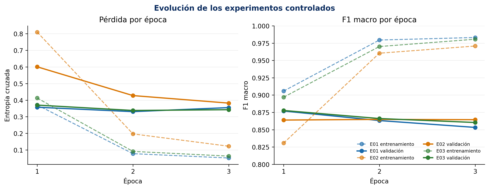

ETID · PROYECTO INTEGRADOR
01
Técnicas Avanzadas de Modelado en IA
Clasificar mejor no significa decidir solo
EfficientNet-B0 frente a una línea base clásica para reconocer siete categorías de residuos electrónicos.
♻
Sebastian Mejia Ortiz · Laura Mariana Jimenez Mienez · Luis Gonzalo Duran
Docente: Oscar Alberto Rodriguez Melendez · Unidad 4 · 2026
01 · EL PROBLEMA
02
Una decisión inicial, no una decisión final
¿Puede una imagen apoyar la clasificación inicial?
¿EfficientNet-B0 mejora el F1 macro de HOG + LinearSVC cuando ambos modelos enfrentan procedencias independientes?
El usuario previsto es el personal de recepción o inventario que necesita una sugerencia de categoría, siempre bajo supervisión.
Alcance que sí asumimos
✓Una imagen RGB → una de siete categorías.
✓Comparación experimental y reproducible.
×No determina peligrosidad ni composición.
×No decide reciclabilidad ni tratamiento.
Pregunta, alcance y criterios definidos antes del entrenamiento en el plan experimental de la Actividad 1.
02 · DATOS
03
ETID versión 1 · CC BY 4.0
Primero auditamos; después entrenamos
6.269
archivos abiertos correctamente
61
resoluciones encontradas
2
copias binarias excluidas
9
etiquetas corregidas en el manifiesto
Siete clases
Battery · Cable · Keyboard · Laptop · Mobile · Mouse · PCB
Los originales no se modificaron; las decisiones quedaron versionadas.
La limitación ya está en los datos
Cable representa menos del 3 % del conjunto depurado. ETID mezcla procedencias y no garantiza representar las condiciones de un punto de recepción local.
Sayed et al. (2026), DOI 10.17632/bndsgcspbx.1 · Documentación inspirada en Gebru et al. (2021).
03 · DISEÑO EXPERIMENTAL
04
Partición por procedencia
La prueba debía ser difícil por una razón
4.289entrenamiento · 16 grupos
→
983validación · 6 grupos
→
995prueba final · 8 grupos
✓ 0 rutas compartidas
✓ 0 hashes compartidos
✓ 0 grupos compartidos
✓ test cerrado
Métrica principal
F1 macro
Cada clase pesa lo mismo.
Umbral previo
≥ 0,3149
Tres puntos sobre la línea base.
Control minoritario
≥ 0,4091
Recall mínimo de Cable.
La selección utilizó validación; el test se abrió una sola vez después de congelar el checkpoint.
04 · DOS REFERENCIAS
05
Complejidad con una obligación: demostrar valor
Un modelo clásico frente a representaciones aprendidas
▦
HOG + LinearSVC
Referencia simple basada en bordes y formas.
Entrada 128 × 128
8.100 características HOG
C = 0,01 elegido en validación
Ajuste rápido en CPU
◉
EfficientNet-B0
Transferencia desde ImageNet y cabeza de siete salidas.
Entrada 224 × 224 con letterbox
Bloques MBConv + squeeze-and-excitation
AdamW + pérdida ponderada
Parada temprana por F1 macro
EfficientNet: Tan y Le (2019) · AdamW: Loshchilov y Hutter (2019).
05 · OPTIMIZACIÓN
06
Un cambio controlado por experimento
La mejor decisión fue detenerse a tiempo
Lectura honesta
E03 superó a E01 por apenas 0,0008: empate práctico, no una victoria sustantiva del dropout 0,4.
Ajuste fino rechazado: −0,0106

Las tres configuraciones alcanzaron su mejor validación en la primera época; después aumentó la brecha frente a entrenamiento.
06 · RESULTADO PRINCIPAL
07
Misma prueba · métricas equivalentes
La mejora fue amplia y consistente en esta muestra
HOG + LinearSVC
0,2849
F1 macro en prueba
MODELO SELECCIONADO0,7461
EfficientNet-B0
Intervalo 95 %
[0,4237; 0,5022]
Bootstrap pareado.
Exactitud
0,7769
Mejora absoluta: +0,4422.
Validación → test
−0,1316
Señal de cambio entre procedencias.
Evaluación final congelada sobre 995 imágenes · 2.000 remuestreos pareados.
07 · ANÁLISIS DE ERRORES
08
El promedio no cuenta toda la historia
Las clases fallan de maneras distintas
Cable: encuentra, pero acusa de más
Recall 0,909 frente a precisión 0,345. Solo hay 22 casos de prueba.
Mobile: absorbe otros objetos
Recibió 65 PCB, 30 portátiles y 22 baterías. Algunas formas y fondos parecen pesar más que el objeto.
Laptop y PCB: predicciones conservadoras
Precisión superior a 0,98, pero recall de 0,622 y 0,675.
Métricas por clase obtenidas de las predicciones finales congeladas.
08 · REPRODUCIBILIDAD
09
Una cifra defendible deja rastro
El resultado puede auditarse sin confiar en nuestra memoria
Repositorio_ETID/
├── data/splits/ manifiestos + hashes
├── notebooks/ pipeline ejecutado
├── models/ checkpoint seleccionado
├── results/ métricas + predicciones
├── docs/ dataset/model cards
└── src/ descarga + verificación
✓Semilla 20261017 y versiones registradas.
✓6.267 imágenes verificadas por SHA-256.
✓Notebook ejecutado sin errores ni rutas personales.
✓Checkpoint cargado con correspondencia estricta.
✓Inferencia real aprobada en una copia limpia.
Resultado de auditoría del repositorio: APROBADO en todos los controles.
El dataset no se redistribuye; el repositorio documenta su descarga desde Mendeley Data.
09 · USO RESPONSABLE
10
Un buen resultado no elimina el contexto
¿Qué tendría que cambiar antes de un piloto?
| Cambio de procedencia | Evaluación externa con imágenes de otro punto de recepción, sin reajustar primero el modelo. |
| Cable y Mobile | Ampliación dirigida de datos y revisión de falsos positivos antes de abrir un test nuevo. |
| Sobreconfianza | Calibración de probabilidades y opción de abstención para enviar casos dudosos a revisión. |
| Uso fuera de alcance | Interfaz que prohíba interpretar la categoría como peligrosidad, reciclabilidad o tratamiento. |
Condición de uso: apoyo supervisado y experimental. No clasificador autónomo.
Gestión de riesgos orientada por NIST AI RMF 1.0 (2023) y ficha del modelo basada en Mitchell et al. (2019).
10 · CONCLUSIÓN
11
La respuesta final
Mejor modelo, evidencia limitada, decisión responsable
DEMOSTRADOSí hubo mejora
+0,4612 de F1 macro frente a la línea base sobre la misma prueba.
ADVERTENCIANo generaliza igual
La caída de 0,1316 entre validación y test revela sensibilidad a la procedencia.
LÍMITENo está listo para operar solo
Los errores por clase aún pueden producir decisiones relevantes y desiguales.
EfficientNet-B0 es una referencia experimental claramente superior para ETID y justifica continuar investigando; todavía no justifica delegarle una decisión operativa.
Validar
otro contexto
Ampliar
clases débiles
Calibrar
y abstenerse
Repetir
con test nuevo
Conclusión sustentada en resultados congelados; no se reajustó el modelo después de consultar la prueba.